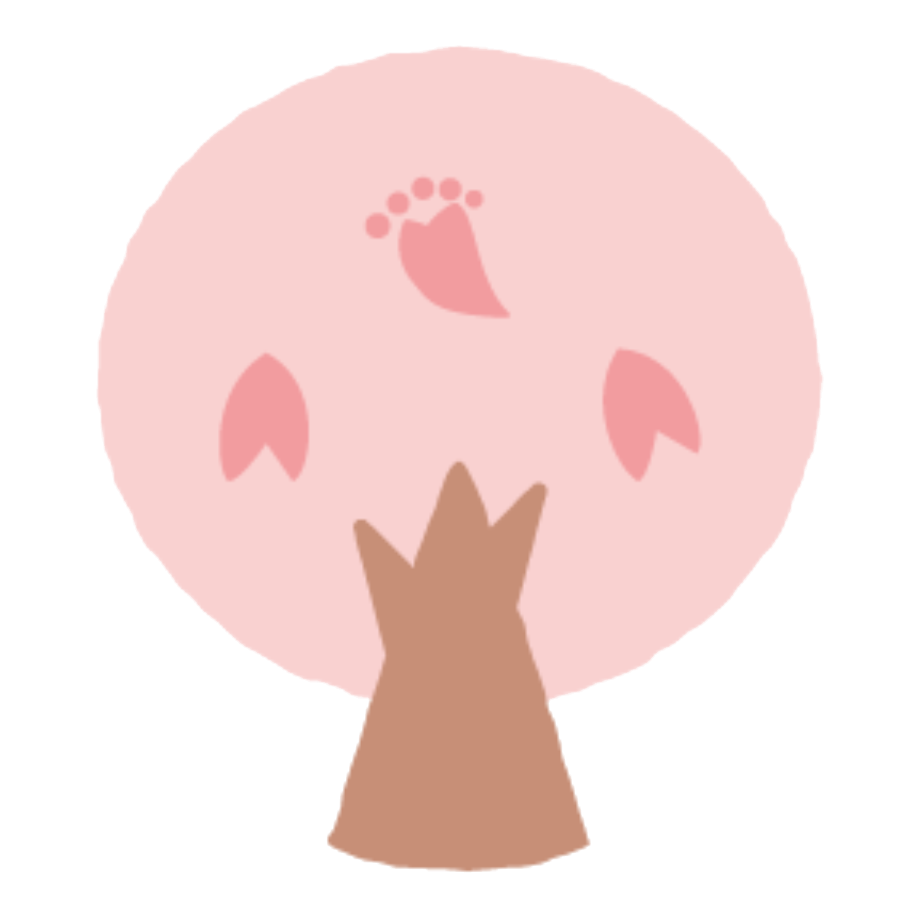
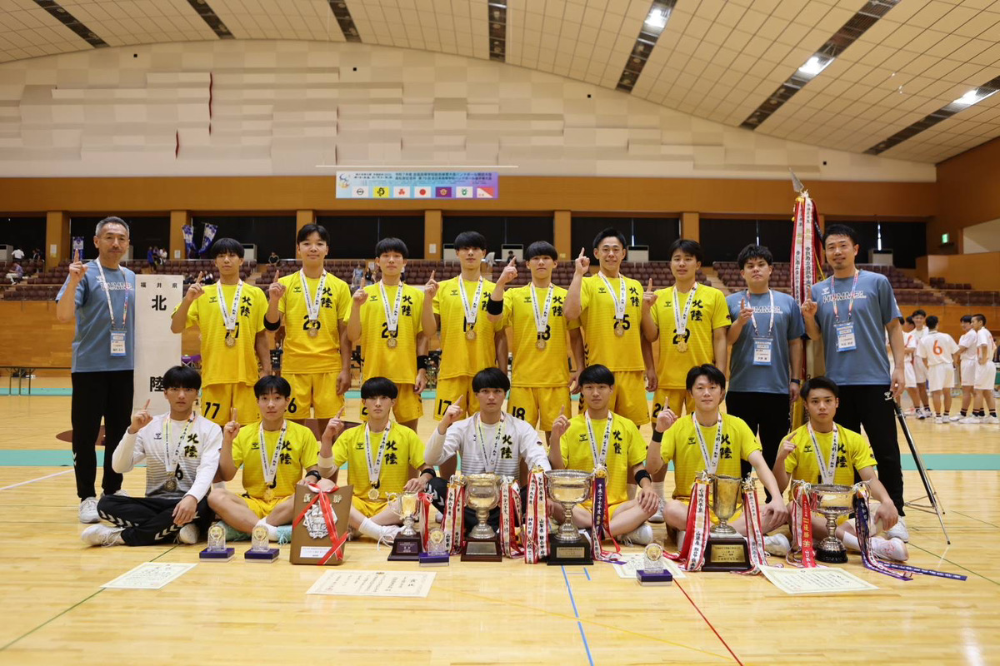
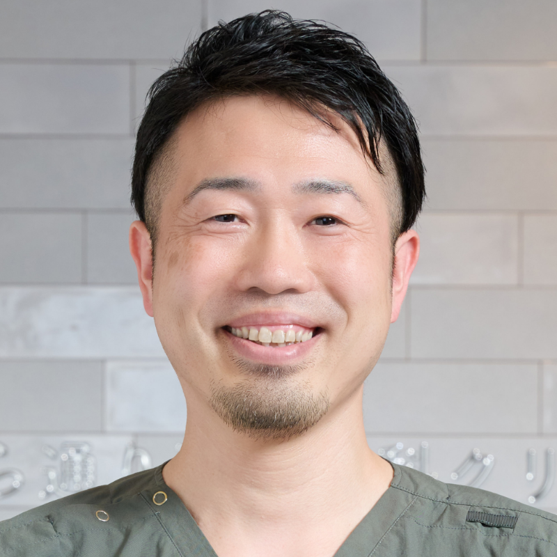
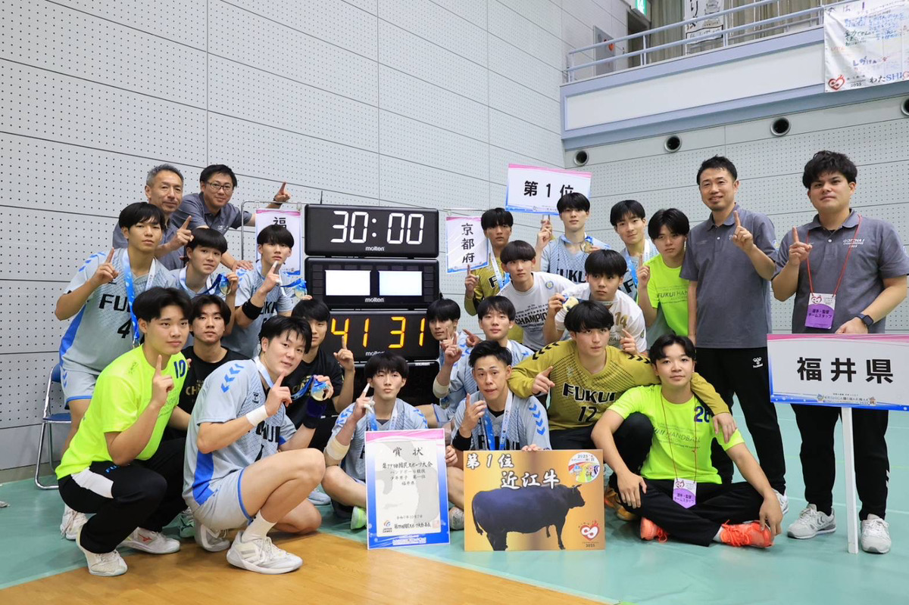

さくら通り整形外科クリニックには、北陸高校男子ハンドボール部で長年トレーナー活動を続けている大谷 尚史が在籍しています。
日々のコンディショニング、外傷・障害への対応、選手との関係づくり、指導者との連携、本業との両立など、スポーツ現場で継続して活動してきた実践があります。
今回のセミナーでは、活動を始めたきっかけから、現在まで継続できている理由、病院・クリニック勤務とトレーナー活動を両立する上でのリアルをお伝えします。
さくら通り整形外科クリニックでは、整形外科疾患に対する外来リハビリを中心に、医師とPTが連携しながら評価・治療・再評価を行っています。
また、スポーツ現場で活動するスタッフも在籍しており、臨床だけでなく、トレーナー活動やアスリハに関心のあるPTがキャリアを広げられる可能性があります。

転職をすぐに考えていない方でも、
という段階での面談も歓迎しています。
肩・膝・足・脊椎・スポーツ障害など、整形外科領域の臨床経験を積むことができます。
診断、画像評価、治療方針を踏まえながら、PTとして評価・介入を行う力を高められます。
一般整形だけでなく、スポーツ選手の復帰支援にも関心を持って取り組めます。
実際にスポーツ現場で活動するスタッフから、現場での関わり方や本業との両立について学べます。
トレーナー活動や院外活動に関心がある方が、キャリアの選択肢を考えやすい環境があります。
必要事項を入力してお申し込みください。
入力いただいたメールアドレス宛に、オンラインセミナーの参加URLと詳細をお送りします。
当日は、トレーナー活動の始め方、本業との両立、スポーツ現場で求められるPTの役割をお伝えします。
当院の臨床や働き方、スポーツ現場への関わりに興味を持った方は、後日面談をご案内します。

北陸高校男子ハンドボール部にて、長年にわたりトレーナー活動を実施。選手のコンディショニング、外傷・障害対応、競技復帰支援、指導者との連携など、スポーツ現場に継続的に関わっている。
本セミナーでは、トレーナー活動を始めたきっかけ、本業との両立、現場で求められるPTの役割について、実体験をもとにお伝えします。
※活動年数・資格・大会帯同実績などは後ほど追記予定。
はい。参加できます。これからトレーナー活動を始めたい方に向けた内容です。
参加できます。AT資格の有無に関わらず、スポーツ現場に関心のあるPTを対象としています。
参加できます。本業と両立しながら活動する考え方や、始める前に確認しておきたい点も扱います。
はい。情報収集としての参加も歓迎しています。
はい。参加できます。病院、クリニック、施設、訪問など、勤務先に関わらずご参加いただけます。
参加可能です。ただし、内容は主に経験年数3〜10年目程度の理学療法士を想定しています。
はい。本セミナーはオンライン開催です。申込後、入力いただいたメールアドレス宛に参加URLをお送りします。
可能です。セミナー申込フォーム、またはセミナー後アンケートでご希望をお知らせください。
さくら通り整形外科クリニックでは、整形外科領域を深く学びたい方、スポーツ現場に関わりたい方、本業以外の活動にも挑戦したい方に向けて、面談を受け付けています。

このような段階でも問題ありません。
セミナー申込フォーム、またはセミナー後アンケートで、面談の希望を選択できます。
面談について相談する→病院・クリニックで働きながら、スポーツ現場に関わるにはどうすればよいのか。長年トレーナー活動を続けてきたPTの実例をもとに、始め方・続け方・本業との両立をお伝えします。トレーナー活動に興味がある方、AT資格を活かしたい方、アスリハに関わりたい方、本業以外にもPTとして活動の幅を広げたい方の参加をお待ちしています。
申込ボタンを押すと、Googleフォームへ移動します。
申込後、入力いただいたメールアドレス宛にオンラインセミナーの参加URLと詳細をご案内します。